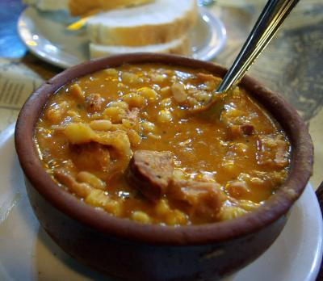

" LOCRO PARA EL 25 DE MAYO

Ingredientes
para el locro
- Maíz blanco pisado, 500 g
- Porotos, 200 g
- Carne vacuna, preferentemente falda o tira de asado, 500 g
- Huesitos de cerdo salados y lavados o patitas de cerdo, 500 g
- Pechito de cerdo, 500 g
- Panceta ahumada, 200 g
- Chorizo colorado, 2
- Tripa gorda (opcional) 300 g
- Calabaza, media
- Ajos, tres dientes
- Laurel, dos hojas
la salsa
- Cebolla de verdeo, 300 g
Ají molido, 2 cucharadas
- Grasa vacuna, 4 cucharadas
- Pimentón dulce, 2 cucharadas
- Comino, 1⁄2 cucharadita
- Sal a gusto
Preparación
del locro
- – Seleccionar maíz que no esté demasiado partido.
- - Lavar con agua fresca el maíz y los porotos.
- – Dejar en remojo con abundante agua y por separado el maíz y los
porotos durante toda la noche.
- – Cortar las patas de cerdo por la mitad y salarlas.
- – Cortar la falda y el pechito de cerdo en trozos medianos, los
chorizos colorados en rodajas gruesas y la panceta en trozos
pequeños.
- – Pelar la calabaza y cortarla en cubitos.
- – Si se optó por incorporar tripa gorda hervirla durante una hora
aproximadamente, luego darla vuelta y quitarle la grasa y por último
cortarla en anillos.
- – Hacer hervir abundante cantidad de agua con poca sal y el laurel,
bajar el fuego e incorporar el maíz para que se vaya cocinando
lentamente.
- – A la hora incorporar la calabaza, los ajos picados, la tripa gorda, la
panceta los huesitos, patitas y pechito de cerdo.
- – Esperar 10 minutos y quitar la espuma que se forme arriba del
caldo con una espumadera.
- – Cada tanto revolver con cuchara de madera.
- – A la hora incorporar la carne vacuna y los porotos.
- – Agregar agua caliente cuando se considere necesario.
- – Recién cuando el maíz esté bien cocido se deja espesar.
- – Incorporar el chorizo colorado más o menos media hora antes de
terminar la cocción.
- – Salar a gusto (en general este plato no suele ser muy salado).
- – El tiempo total de cocción del locro es de unas tres y media a
cuatro horas.
de la salsa